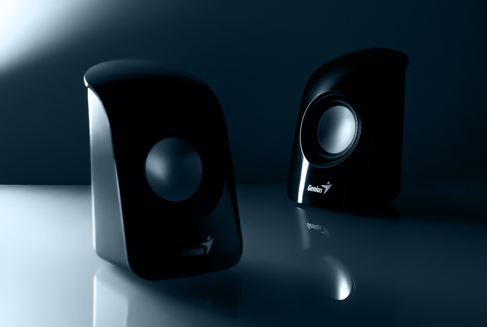

Moniter
A computer monitor is an output device that displays information in pictorial or text form. A monitor usually comprises a visual display, some circuitry, a casing, and a power supply.Early electronic computers were fitted with a panel of light bulbs where the state of each particular bulb would indicate the on/off state of a particular register bit inside the computer. As early monitors were only capable of displaying a very limited amount of information and were very transient, they were rarely considered for program output. Instead, a line printer was the primary output device, while the monitor was limited to keeping track of the program's operation. Computer monitors were formerly known as visual display units (VDU), but this term had mostly fallen out of use by the 1990s.
Speaker
A loudspeaker (commonly referred to as a speaker or speaker driver) is an electroacoustic transducer,that is, a device that converts an electrical audio signal into a corresponding sound.The dynamic speaker was invented in 1925 by Edward W. Kellogg and Chester W. Rice issued as US Patent 1,707,570. Apr 2, 1929. When the electrical current from an audio signal passes through its voice coil—a coil of wire capable of moving axially in a cylindrical gap containing a concentrated magnetic field produced by a permanent magnet—the coil is forced to move rapidly back and forth due to Faraday's law of induction (as it is usually conically shaped for sturdiness) in contact with air, thus creating sound waves.A computer speaker is an output hardware device that connects to a computer to generate sound.

Headphones
Headphones are a pair of small loudspeaker drivers worn on or around the head over a user's ears. which convert an electrical signal to a corresponding sound. Headphones let a single user listen to an audio source privately, which emits sound into the open air for anyone nearby to hear. Headphones are also known as earspeakers, earphones or, colloquially, cans.Headphones grew out of the need to free up a person's hands when operating a telephone. There were several iterative products that were predecessors to the "hands-free" headphones. By the 1890s the first device that is unmistakably a headphone was made by a British company called Electrophone, which created a system allowing their customers to connect into live feeds of performances at theaters and opera houses across London.